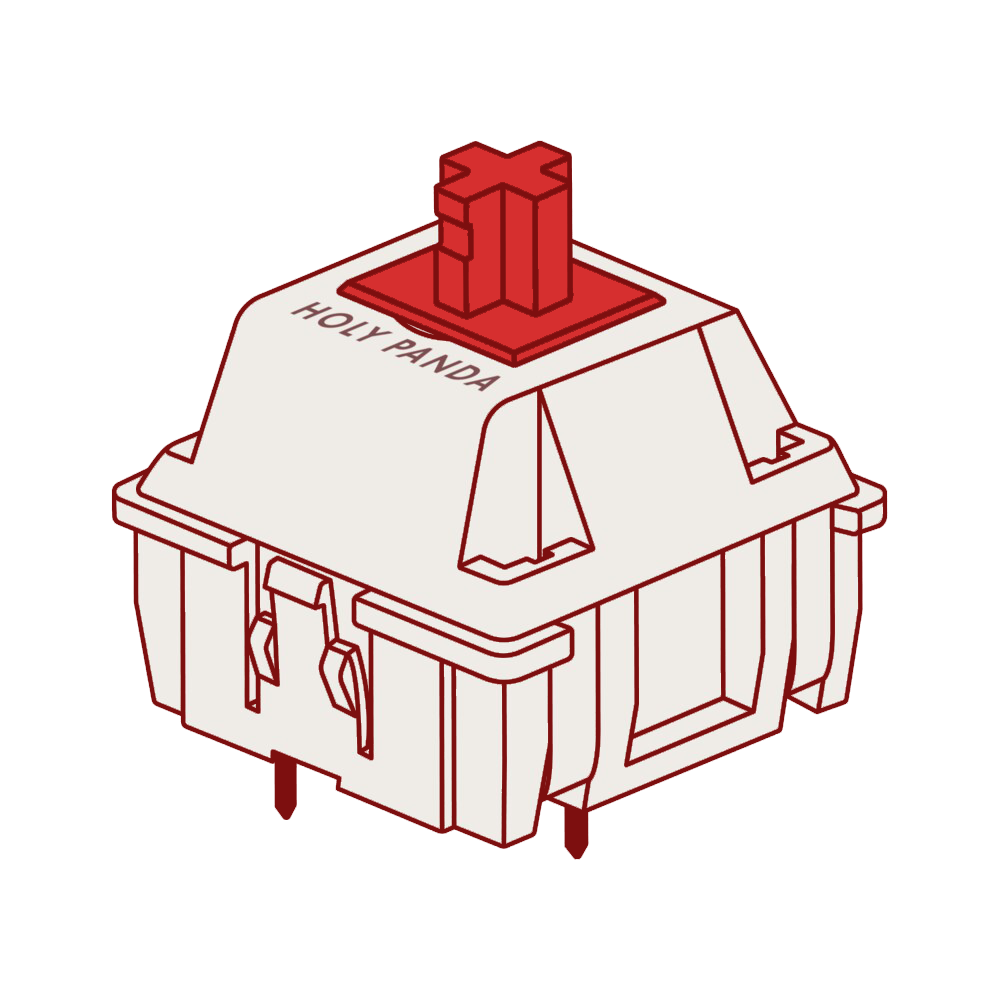
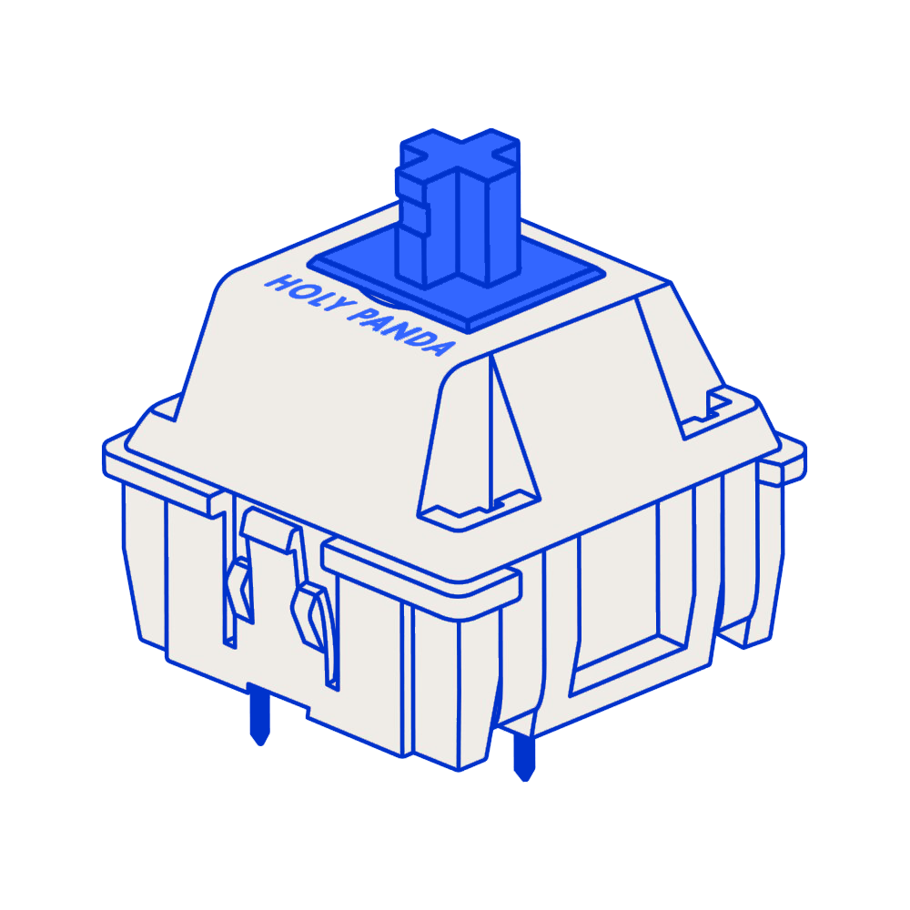
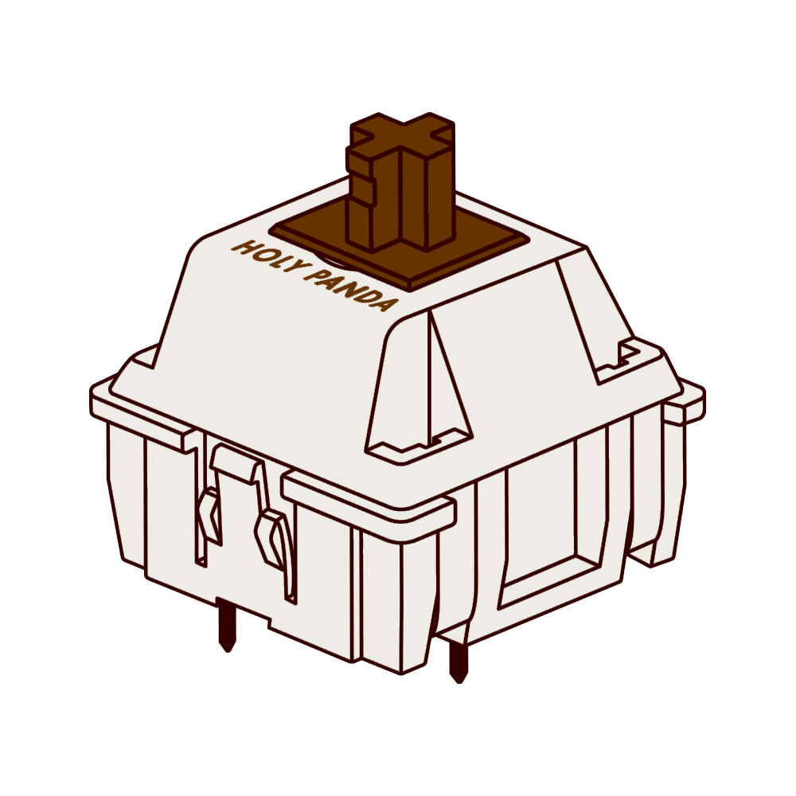

TEST THE SOUNDS
Elk keyboard klinkt anders dit komt voornamelijk door de verschillende switches in de keybaords. Op deze pagina kan je de meest bekende switches zelf uittesten en kijken welke je fijn vind.
Klik op de afbeeldingen!

Red switches

Blue switches
